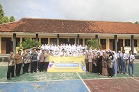
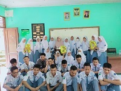

My Projects

Untuk meraih sebuah kesuksesan membutuhkan sebuah perjuagan. Dan perjuangan bukan hal yang mudah.
BKC(Bandung Karate Club) mengajarkanku pentignya beladiri dan eratnya persaudaraan. Tidak disetiap keadaan kita dapat meminta peertolongan dan mendapatkan pertolongan di waktu yang tepat. Setidaknya kita bisa melindungi diri dari suatu keadaan.

Kebarsamaan merupakan sebuah kebahagian. Kebahagian yang mungkin tidak dapat terulang kembali.
Aku ceritakan kesedihanku kepada derasnya air yang mengalir. Derasnya air yang mengajarkanku bagaimana mengalir tanpa sedikitpun mengeluh.

Bila berjauhan dari keluarga dan sendirian,alam yang menjadi teman sejati. Melihat keindahan dan kembali kepada Tuhan.